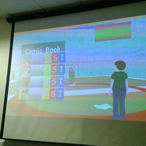

I attended the Windows Games Jam in 2013 as part of a group. We won the competition and got one of the games we developed in that time on the windows app store as well as winning t-shirts and kinect development kits.
Link to windows app store page here
I have also participated in 2 Ludum Dare competitions (LD27 + LD31). Over the games jam period I posted several posts documenting my progress and commenting on other peoples progress reports.
Link to Ludum Dare 27 Entry here
Link to Ludum Dare 31 Entry here
Example evidence of progress posts on LD website
As well as posting on their website, I regularily post general work/hobby project progress pictures and design ideas on my blog
I also enjoy making occasional videos for my game development, which I post on my youtube page
As well as these online outlets, I also post regularly on development forums such a Polycount and the games dev section of the forum Facepunch, as well as using the hashtag #screenshotsaturday for development pictures, where I have met several other developers around the world, and have gained many new followers who are also games developers.
I went to the Aardvark Swift "Get in the Game Career Talk" in November, where I met several people in the industry and make links with them on Linkedin.I am also in the process of waiting for replies/applying to games companies around London for jobs after I graduate (Including RockStar London and Space Ape Games). As well as creating my CV I have also started designing some business cards, which I will bring to GradEx in May.
I am also planning on taking part in this years Windows 10 Games Jam on campus in June.